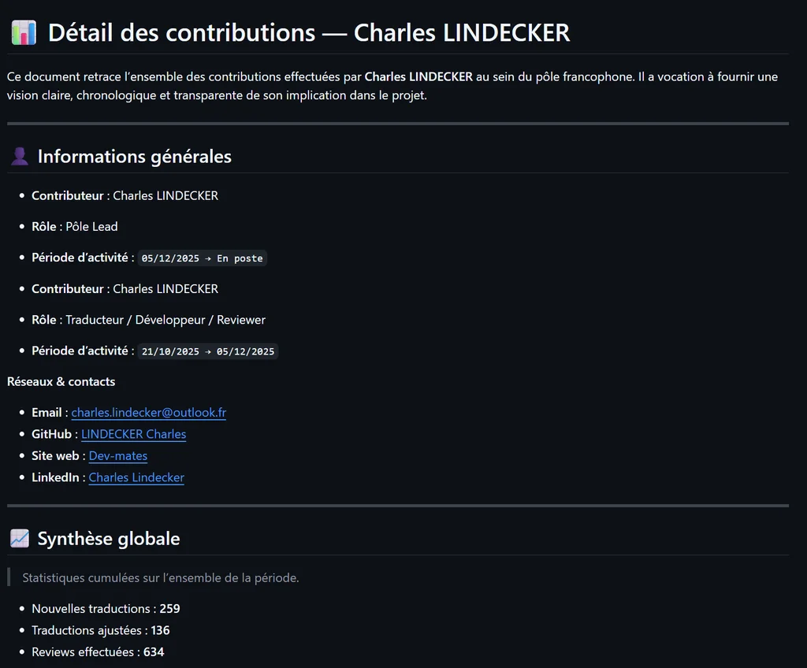

Je maîtrise d’abord les règles du jeu.Ensuite, je les réinvente.
Architecte logiciel, je code depuis mes 13 ans. J’ai formé des développeurs jusqu’à leur titre, et je mène aujourd’hui le pôle francophone d’un projet open source.
Mon parcours n’a rien d’une ligne droite. C’est en chemin que ma méthode s’est forgée.
Vers 10 ans
Le terrain de jeu
Avec mon père, informaticien, je démonte de vieux PC hors service. À 13 ans, j’apprends le C sur OpenClassrooms avec une idée fixe : coder mes propres jeux sur Unreal Engine. Avec mon cousin, on invente un jeu de cartes sur papier, dont on sort des éditions sans fin. On passe des après-midi entiers à plastifier les cartes à la main.
Vers 17 ans
Gwent, la méthode
Je découvre Gwent, un jeu de cartes en ligne. Pas d’excuse en cas de défaite pour jeter la faute sur un autre : juste moi et mes propres décisions. Je teste un deck, puis un deuxième, puis un troisième. Quand c’est un flop, j’apprends de ce flop et je comprends où mon instinct m’a trompé, ce qui l’aiguise.
En un an, j’approche du classement mondial, puis je plafonne pendant quatre mois. Copier ce que jouent les meilleurs ne suffit plus. Alors je fais l’inverse : je construis un deck à contre-courant, et c’est lui qui me fait entrer dans le classement mondial.
« Juste moi et mes propres décisions. »
Avant 2025
Les portes qui ne s’ouvrent pas
BUT Informatique, fac de physique-chimie, BUT Réseaux & Télécoms : trois années de filières classiques, une chacune. Puis la piscine de 42, sans admission. Ça n’a pas vraiment marché, mais je n’ai pas abandonné : j’ai recommencé jusqu’à réussir, et je me suis réorienté autant que nécessaire.
2025
La voie qui marche
Je passe le titre de Développeur web et web mobile chez Elan Formation. Je boucle le programme en un mois, je mène des projets en parallèle et je couvre en bonus l’essentiel du niveau supérieur, Concepteur développeur d’applications. En stage chez ATIS, mes modules réduisent de 30 % le temps de traitement administratif.
Fin 2025
De l’autre côté du bureau
Deux mois après mon titre, l’école perd son formateur en fin de promotion. Des étudiants croisés pendant mon cursus donnent mon nom. Je reprends une dizaine d’apprenants, dont la moitié prépare le CDA, un niveau au-dessus de mon propre titre. Tous obtiennent leur titre.
Aujourd’hui
Je suis architecte logiciel : développement web et DevOps. À côté, je suis lead et mainteneur du pôle francophone de PvZ Fusion, et je construis mes propres outils. Trois verbes résument ma façon de travailler.
À générer : B-04
D’abord
Maîtriser
S’approprier vite ce qui se fait.
Le programme de développeur web bouclé en un mois.
À chaque mise à jour de Gwent, deux jours pour maîtriser ce que jouent les autres.
Ensuite
Réinventer
Sortir des sentiers battus.
Un deck à contre-courant pour percer le plafond du classement mondial.
Un moteur de jeu maison pour Omnicard, optimisé pour le navigateur.
Puis
Emmener
Faire progresser les autres.
Une vingtaine de contributeurs formés sur PvZ Fusion, dix au plus fort.
Une promotion reprise en urgence : tous titrés.
Du solo au collectif
Gwent m’a appris à décider seul. PvZ Fusion m’a appris à faire grandir les autres : une vingtaine de contributeurs formés, dont certains arrivés sans compétences et devenus des piliers de la communauté.
Une étoile vive, reliée : l’équipe au plus fort, dix personnesUne étoile pâle : un autre contributeur formé
Les preuves
Trois projets menés au bout, racontés comme ils se sont passés : le problème, la décision, le résultat.

EmmenerOpen source, bénévole
PvZ Fusion, le pôle francophone
Problème
Une traduction française en retard de plusieurs années, pleine d’erreurs, et des bénévoles qui arrivent sans méthode.
Décision
Structurer le pôle : accueil et formation des nouveaux, revues systématiques, documentation, et des outils en Python pour repérer ce qui manque à chaque version.
Résultat
En dix mois, une version à jour et propre. Une vingtaine de contributeurs formés, dix au plus fort, et une nomination comme mainteneur du projet multilingue.
contributeurs formés
≈ 20
mois pour une version à jour
10
commits sur le dépôt public
317
« La qualité et la sincérité des échanges démultiplient les résultats. »
Le jeu de cartes inventé avec mon cousin attend depuis des années de devenir un jeu vidéo. Le projet traîne.
Décision
Un moment, j’en ai eu marre : j’ai repris le projet seul. J’ai rééquilibré nos cartes et codé mon propre moteur de jeu sur une stack que je maîtrisais déjà, .NET et Angular, pour me lancer tout de suite.
Résultat
Un moteur de règles en temps réel qui tourne dans le navigateur, environ trois mois de travail cumulé. Ses limites m’ont forcé à apprendre SignalR, le cache, l’optimisation DevOps et le prérendu serveur.
Fin de la maquette. Ci-dessous : le design system de la proposition, puis pourquoi cette direction.
Le design system de Clair de lune
Une nuit moderne, éclairée par une seule source : la lune. Tout ce qui suit en découle : la palette, les liserés, les ombres et le seul moment de mouvement.
Principes
Une seule lumièreLa lune, en haut à droite. Chaque liseré s’éclaire de ce côté, chaque ombre tombe à l’opposé.
Familier d’abord, poétique ensuiteL’interface se lit comme celle d’un produit. L’atmosphère se découvre en second, pour qui prend le temps.
Un seul spectacleLa constellation est le seul élément qui bouge sans qu’on le lui demande. Tout le reste est calme.
Le bleu, c’est CharlesLe bleu roi de ses chemises sert à agir, le clair de lune sert à éclairer. Un seul accent par écran.
Couleurs
Une nuit bleue plutôt qu’un noir neutre : c’est le bleu roi, assombri. Ratios calculés sur le fond --nuit, sauf mention.
Nuit
--nuit #0D1424
Fond de page.
Nuit 2
--nuit-2 #141D33
Surfaces, planches, cadres.
Lune
--lune #E8EDF5
Titres et texte fort.
15,6:1, AAA
Texte
--texte #CDD5E3
Texte courant, moins éblouissant que la lune.
12,5:1, AAA
Brume
--brume #9AA8BF
Texte secondaire, légendes.
7,6:1, AAA
Clair de lune
--clair #BFD6F2
Liens, étoiles, focus, repères.
12,4:1, AAA
Bleu roi
--bleu-roi #2F5BEA
L’action principale, et elle seule.
Blanc dessus : 5,5:1, AA
Étoile éteinte
--eteint #6F86B8
Ce qui n’est pas encore lu.
5,1:1, AA
Fleur
--fleur #F4F2EC
Illustration uniquement, jamais dans l’interface.
Typographie
Aa
Jost
Géométrique, dans la lignée de Futura, la police de la plaque déposée sur la Lune par Apollo 11. Titres en 300, interface en 500, jamais de capitales espacées.
Aa
Literata
Dessinée pour lire longtemps sur écran, avec un axe de taille optique. Corps à 18 px, interlignage 1,65 ; l’italique porte les citations.
Échelle typographique
AccrocheJost 300, 42 → 72 px, interligne 1,04
Je maîtrise d’abord les règles du jeu.
Titre de sectionJost 300, 36 → 60 px, 1,08
L’origine
Titre d’étapeJost 400, 24 → 36 px, 1,2
Gwent, la méthode
Chiffre cléJost 300, 44 → 60 px, 1
447
ChapeauLiterata 400, 21 px, 1,55
Architecte logiciel, je code depuis mes 13 ans.
CorpsLiterata 400, 18 px, 1,65
Je teste un deck, puis un deuxième, puis un troisième. Quand c’est un flop, j’apprends de ce flop et je comprends où mon instinct m’a trompé.
CitationLiterata italique, 24 → 32 px, 1,35
« Juste moi et mes propres décisions. »
PetitLiterata 400, 16 px, 1,5
commits sur le dépôt public
InterfaceJost 500, 14 → 17 px, 1,2
Voir le dépôt
Espacement, grille, formes
Échelle d’espacement
4 px
8 px
12 px
16 px
24 px
32 px
48 px
64 px
96 px
128 px
Conteneur de 1 240 px, gouttière de 16 à 64 px. Colonne de lecture : 34 em, environ 68 caractères. Sections espacées de 88 à 152 px.
Formes
Cadre, rayon 6 px
Pilule : boutons, étiquettes
Filet 1 px
La règle de lumière
Liseré clair sur le bord haut droit (--reflet), ombre portée vers le bas gauche (--ombre). Valable pour les boutons, les cadres et les captures.
Barre collante sur bureau, toujours à un clic du contact. Le bouton du haut reste en contour : le seul aplat bleu de l’écran est celui de l’accroche.
Étiquette de verbe
MaîtriserRéinventerEmmener
Relie chaque preuve au verbe qu’elle démontre. Casse de phrase, jamais de capitales.
Chiffre clé
téléchargements en un mois
447
contributeurs formés
≈ 20
Toujours un chiffre sourcé et son libellé en clair, jamais seul.
Citation
« Juste moi et mes propres décisions. »
Seulement ses propres mots. L’étoile seule rappelle le point de départ de l’arc.
Étape de parcours
2025
La voie qui marche
Lue : l’étoile est allumée.
Fin 2025
De l’autre côté du bureau
Pas encore lue : un simple point.
Bloc d’étude de cas
RéinventerProjet personnel
Problème
Le projet traîne.
Décision
Reprendre le projet seul, sur une stack déjà maîtrisée.
Résultat
Un moteur de règles en temps réel dans le navigateur.
Problème, décision, résultat : un ordre causal, relié par un fil. Le résultat porte l’étoile.
Appel à l’action
Discutons
Une équipe à faire progresser, un problème qui résiste aux solutions habituelles : parlons-en.
M’écrireTélécharger mon CV
Iconographie et ornements
Ni icônes de jeu, ni ornements gothiques : des étoiles, des traits de constellation et des phases de lune, en aplat clair. Tout est codé en SVG (B-03), rien n’est à générer.
Étoile alluméeUne étape lue, un résultat.
Étoile éteinteCe qui reste à lire.
Étoile de CharlesLe centre de l’amas.
ContributeursVif : au plus fort. Pâle : les autres.
TraitsPlein : parcouru. Pointillé : la suite.
Les phases de la lune indiquent où l’on en est du récit
CroissantL’origine
Premier quartierAujourd’hui
GibbeuseLes preuves
Presque pleineEn dehors du code
Pleine luneDiscutons
Monogramme
À générer : B-02
Provisoire : un croissant seul. Le monogramme final associe « CL » et le croissant, en une couleur.
Fleurs et brume
À générer : B-05
À générer : B-06
Fleurs blanches isolées pour les transitions de section ; brume transparente et raccordable pour le hero et « Discutons ».
Images
Portrait au clair de lune
AvantAprès
Duotone de la nuit au clair de lune, en CSS : niveaux de gris, multiplication, éclaircissement, puis un reflet en haut à droite. La version finale, retouchée à la main, est l’asset B-04. Toujours une vraie photo, jamais une image inventée.
Captures de projets
Cadre à rayon de 6 px, liseré éclairé côté lune, ombre portée vers le bas à gauche. Les captures ne sont jamais recolorées : une preuve reste telle quelle.
Mouvement
Le moment orchestré. Quand une étape entre dans la zone de lecture, le trait depuis l’étoile précédente se dessine en 900 ms (cubic-bezier(.22,.61,.36,1)), puis l’étoile s’allume en 450 ms. L’amas d’« Aujourd’hui » suit : les liens en cascade de 45 ms, les étoiles juste après.
Micro-interactions. 180 ms, couleur et liseré seulement : rien ne se déplace. Le bouton principal capte un peu plus de lune au survol.
Mouvement réduit. La constellation et l’amas sont affichés d’emblée, entièrement tracés ; aucune transition.
Sans JavaScript. L’état final est l’état par défaut : le script n’arme que ce qui est encore sous le pli au chargement.
Accessibilité
Paires de contraste
Paire
Ratio
Niveau
Lune sur nuit
15,63:1
AAA
Texte sur nuit
12,45:1
AAA
Clair de lune sur nuit
12,35:1
AAA
Brume sur nuit
7,64:1
AAA
Brume sur nuit 2
6,96:1
AA
Étoile éteinte sur nuit
5,06:1
AA
Blanc sur bleu roi
5,52:1
AA
Blanc sur bleu roi, survol
6,41:1
AA
Bouton bleu roi sur nuit (forme)
3,33:1
Interface ≥ 3:1
Focus clavier : contour de 2 px en clair de lune, décalé de 3 px, visible sur la nuit comme sur le bleu roi.
Cibles : boutons de 48 px de haut, liens de navigation et liens de preuve de 44 px.
La constellation du parcours est masquée aux lecteurs d’écran (le texte dit tout) ; l’amas, lui, porte une description, car il apporte une donnée.
Texte courant en --texte plutôt qu’en blanc pur, pour limiter l’éblouissement sur fond sombre.
Lien d’évitement « Aller au contenu », titres hiérarchisés, lang="fr", la fausse langue regex annoncée par un titre.
Clair de lune raconte ton parcours comme une nuit qu’on traverse. On part d’une étoile seule, on bute sur des portes fermées, puis la constellation se dessine jusqu’à un amas d’une vingtaine d’étoiles : l’arc du solo au collectif, rendu visible sans un mot de jeu vidéo. L’interface, elle, reste celle d’un produit sérieux : lisible, calme, rapide à parcourir. L’atmosphère se lit en second, pour qui prend le temps.
Pourquoi elle te ressemble
Le bleu de la nuit, c’est le tien. Tu portes une chemise bleu roi sur tes quatre photos. Ici, le bleu roi est la couleur de l’action (« Discutons »), et la nuit en est la version assombrie.
La constellation, c’est ta fonctionnalité phare dans Bloodborne Legendary Run. Elle change de rôle : elle ne range plus des projets, elle raconte une trajectoire, et elle compte des personnes. Une étoile, un contributeur formé.
Le tracé n’est pas décoratif. La petite chute au troisième point, ce sont les portes qui ne s’ouvrent pas ; la remontée, la voie qui marche. C’est ta « courbe exponentielle », plus lente au départ.
Jost descend de Futura, la police de la plaque qu’Apollo 11 a laissée sur la Lune. Presque personne ne le remarquera, et c’est exactement le genre de détail que tu soignes.
Literata est faite pour lire longtemps. Ton récit est long et écrit à la première personne : il mérite une police de lecture, pas une police d’affiche.
Le dosage du jeu
Pour qui connaît Bloodborne, la lune, la brume et les fleurs blanches évoquent le rêve du chasseur, l’endroit où l’on revient pour progresser. Pour un recruteur, c’est une nuit claire et calme, rien de plus.
Aucun mot du jeu dans l’interface, aucune image du jeu, aucun symbole officiel. Le seul visuel lié à Bloodborne est une capture de ta propre appli, dans « En dehors du code ».
Les phases de la lune, à côté des titres, indiquent où l’on en est du récit : du croissant de « L’origine » à la pleine lune de « Discutons ».
Ce qui change par rapport à la V1
Un récit qui se lit de haut en bas, au lieu d’un hall à cinq portes de même poids.
Plus de verre ni de panneaux translucides arrondis, plus d’icônes du jeu, plus de lexique : une interface sobre, éclairée par une seule lumière.
Plus d’intro : l’accroche est la première chose qu’on lit.
La constellation de la V1 rangeait quatorze projets sans hiérarchie. Ici, elle porte un seul fil, et chaque étoile a un sens.
Risques et parades
Sans l’illustration finale, l’ensemble peut ressembler à une page d’accueil SaaS sombre. Parade : soigner B-01, la dépense prioritaire de cette direction. Lune, brume et fleurs doivent avoir une vraie profondeur picturale, pas l’aspect d’un dégradé.
La lune est un motif courant des thèmes sombres. Parade : elle n’est pas un logo mais la source de lumière. Elle décide des liserés et des ombres, et ses phases racontent la progression.
Doublon possible avec les constellations de la V1 et de BLR. Parade : la réserver au récit, avec des données honnêtes (une étoile, une personne), et ne jamais en refaire un catalogue de projets.
Lire longtemps sur fond sombre fatigue. Parade : texte courant en #CDD5E3 plutôt qu’en blanc pur, Literata à 18 px, interlignage de 1,65, lignes de moins de 70 caractères.
Une animation au défilement peut agacer. Parade : un seul moment, l’état final visible sans JavaScript, le mouvement réduit respecté.
La troisième étude de cas reste à arbitrer : gup (usage public chiffré) ou le portfolio V1 (souci du détail). La maquette montre gup.
Assets à générer
Le détail (formats, prompts) est dans docs/assets-a-generer.md.
B-01 : illustration du hero, lune, brume et fleurs blanches, paysage nocturne original en calques séparés (21:9 et 4:5).
B-02 : monogramme « CL » avec un croissant de lune, vectoriel, une couleur.
B-03 : glyphes d’étoiles et de constellation, à coder en SVG, rien à générer.
B-04 : portrait étalonné au clair de lune d’après la photo de profil (retouche d’une vraie photo).
B-05 : fleurs blanches isolées sur fond transparent, pour les transitions de section.
B-06 : texture de brume transparente et raccordable.